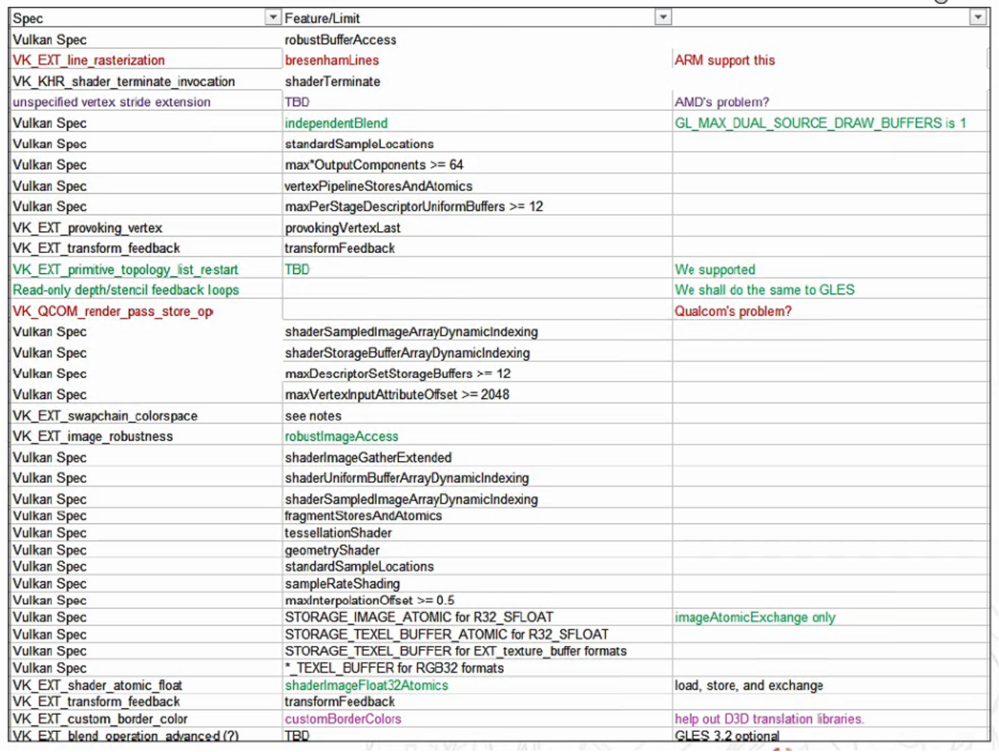

1. ANGLE: Vk扩展的使用与支持
本文档内容:
- 首先根据 Vulkan Specification 描述了 Vulkan 标准中如何定义 Extension, Feature 等相关功能集, 以及如何在初始化过程中启用他们.
- 描述 ANGLE 在创建 Vulkan 后端时, 如何使用 Extensions.
- 描述 ANGLE 前端 GLES 中是如何对 GLES 提供支持的
- 以统计列表, 列举出 ANGLE 使用了哪些 vk 功能, 并用来支持了哪些 GLES Extensions.
2. Vulkan 扩展
对于不同的平台, 驱动, 操作系统等, 当Vulkan的底层实现不同时, Vulkan 可用的功能集也有很多区别. 本章描述了 Vulkan 如何定义和扩展功能集, 主要介绍了四个概念: Extension, Feature, Limitation, 和 Format.
(本章文本内容的更多细节, 参见 Vulkan Specification 1.1, 代码均为示例用伪码)
2.1. Vulkan 初始化流程
在开发应用程序时, 程序中要启用的 Vulkan 功能集必须在初始化 Device 前确定下来.
以下是初始化过程中与功能相关的过程:
对应 vk 初始化的前三步: Instance –> Physical Device –> Device
@startuml
class Device {
}
hide members
hide circle
Instance --> Physical_Device
Physical_Device --> Device
@enduml
Vulkan初始化 Device 相关流程:
- 选择启用 Instance Extensions, 创建 VkInstance
- 选定物理设备, 查询 Extensions, Features, Limitations, Formats
- 选中 Device Extensions, 查询 Features2*, Properties2, Formats
- 选择启用的 Device Extensions, Features, Features2, 创建 VkDevice
注(): 本文档为方便描述, Features2, Properties2 用来特指来自 Extension 的属性, 以区分由 Vulkan 核心提供的 Features, Properties. *
@startuml
[*] -> Enume_Instance_Extension
Enume_Instance_Extension --> CreateInstance
CreateInstance --> Enume_PhysicalDevices
Enume_PhysicalDevices --> Device_Extension
Device_Extension --> Features2
Device_Extension --> Properties2与Format
Enume_PhysicalDevices --> Features
Enume_PhysicalDevices --> Limits与Formats
Device_Extension --> vkCreateDevice
Features --> vkCreateDevice
Features2 --> vkCreateDevice
Limits与Formats --> Application
Properties2与Format --> Application
Enume_Instance_Extension: 枚举 vk 支持的
Enume_Instance_Extension: Instance-level Extensions
Enume_Instance_Extension: 选择要启用的
CreateInstance: 创建 Instance
Enume_PhysicalDevices: 枚举 物理设备, 选择 GPU 设备
Device_Extension: 查询GPU支持的
Device_Extension: Device-Level Extensions
Device_Extension: 从中选择要启用的
Features2: 查询 Extensions
Features2: 的 Features 结构体,
Features2: 从中选择要启用的
Properties2与Format: 查询 Extensions 的
Properties2与Format: Limits 与 Format
Features: 查询 GPU 支持的
Features: Features,
Features: 从中选择要启用的
Limits与Formats: 查询 GPU 支持的
Limits与Formats: Limits与Formats
vkCreateDevice: 将启用的 Extensions
vkCreateDevice: 和 Features 作为参数
vkCreateDevice: 放入 CreateInfo 结构体,
vkCreateDevice: 创建逻辑设备 Device,
Application: 查询支持功能
@enduml
-
Extension: 功能集的抽象概念, 用来为 Vulkan 添加新的 Commands，Structures 和 Enumerants. 同时可能新增 Features, Limitations, 和 Format.
-
Feature: bool 值集合, 可选功能的开关. 可以用来查询设备支持的功能,
- Limitation 和 Format 是两个只读参数集, Limitation 又称做 Properties, 表示设备特征值; Format 表示支持的格式.
本章后面各章节对此流程各步骤进行解释, 并包含示例代码.
2.2. Extensions: 扩展
- 扩展 (Extensions) 可用来为 Vk 添加新功能. Vk 核心的新版本 (如: VK_VERSION_1_1) 也可以视为一个扩展.
-
扩展可以定义新的 命令, 枚举, 和结构. ( Commands，Structures 和 Enumerants)
-
扩展分为实例级和设备级 (Instance-level 和 Device-level)
- 当 Commands 用来枚举实例属性 (instance properties), 或接受 VkInstance 对象作为参数, 则被视为实例级功能。
- 当 Commands 用来枚举物理设备属性 (physical device properties), 或接受 VkDevice 及其子类对象作为参数，则被视为设备级功能。
为了方便编译，在 Khronos 提供的 vulkan_core.h 中除了核心API, 还定义了已注册 Extensions 定义的接口，包括新 结构, 枚举, 和命令的函数指针类型。扩展的实现通过 Layers 和 Vulkan实现来提供。
Vulkan 与 Extensions, Features, Properties 的关系:
@startuml
hide circle
package Vulkan {
class "VK_VERSION_1_0" {
VkPhysicalDeviceFeatures
VkPhysicalDeviceProperties
VkFormat
}
class "VK_VERSION_1_1" {
VK_KHR_XXX_
VK_XXX_Features
VK_XXX_Properties
vkGetPhysical_Device_Feature2()
vkGetPhysical_Device_Properties2()
}
class "Other Vk Extensions" {
VK_EXT_XXX_
VK_AMD/GOOLE_XXX_
VK_XXX_Features_EXT
VK_XXX_Properties_EXT
}
}
@enduml
2.2.1. 启用 Vk Extensions
- Vk Extensions 需要在初始化阶段显式启用.
- 启用 instance extension, 要在创建
VKInstance时, 将扩展名添加到VkInstanceCreateInfo的成员ppEnabledExtensionNames中. - 启用 device extension, 要在 创建
VkDevice时, 将扩展名添加到VkDeviceCreateInfo的成员ppEnabledExtensionNames中. - Physical-Device-Level 功能没有启用机制，只要
VkPhysicalDevice的功能对应的 Extensions 在枚举函数vkEnumerateDeviceExtensionProperties中被列出.
仅 启用 扩展操作而言, 除了 启用 该扩展自身定义的命令, 枚举, 和结构外, 不会更改核心Vulkan API 或其他扩展的功能。
示例: 创建 VkInstance 时, 启用 Extensions:
// add Target Extension Names
std::vector<const char*> extensions();
extensions.push_back(VK_KHR_WIN32_SURFACE_EXTENSION_NAME);
VkInstanceCreateInfo inst_info = {};
inst_info.sType = VK_STRUCTURE_TYPE_INSTANCE_CREATE_INFO;
...
// Enable Instance Extensions
inst_info.enabledExtensionCount = extensions.size();
inst_info.ppEnabledExtensionNames = extensions.data();
VkInstance instance;
VkResult res = vkCreateInstance(&inst_info, NULL, &instance);
对 VkPhysicalDevice, 枚举其支持的 Extensions:
// 枚举设备
uint32_t deviceCount = 0;
vkEnumeratePhysicalDevices(instance, &deviceCount, nullptr);
std::vector<VkPhysicalDevice> devices(deviceCount);
vkEnumeratePhysicalDevices(instance, &deviceCount, devices.data());
// 选择设备
VkPhysicalDevice physicalDevice = devices[0]; // 仅示例,正确代码应选择对应 GPU 设备
// 枚举 Extensions
uint32_t extensionCount;
vkEnumerateDeviceExtensionProperties(physicalDevice, nullptr, &extensionCount, nullptr);
std::vector<VkExtensionProperties> availableExtensions(extensionCount);
vkEnumerateDeviceExtensionProperties(physicalDevice, nullptr, &extensionCount, availableExtensions.data());
创建 VkDevice 时, 启用 Extensions:
// add Target Extension Names
std::vector<const char*> device_extension_names();
// check if physicalDevice support extension:
for (const auto& extension : availableExtensions) {
if(strcmp(extension.extensionName, VK_KHR_SWAPCHAIN_EXTENSION_NAME) == 0)
device_extension_names.push_back(extension.extensionName);
}
}
VkDeviceCreateInfo device_info = {};
device_info.sType = VK_STRUCTURE_TYPE_DEVICE_CREATE_INFO;
device_info.pNext = NULL;
...
// Enable Device Extensions
device_info.enabledExtensionCount = device_extension_names.size();
device_info.ppEnabledExtensionNames = enabledExtensionCount ? device_extension_names.data() : NULL;
VkDevice device;
res = vkCreateDevice(physicalDevice, &device_info, NULL, &device);
2.3. Features: 功能
Features 用来设置或查询 非所有实现都支持 的功能。 Feature 均为 bool 值.
-
Features 是物理设备的属性。(physical device properties)
-
这些功能是“可选”的，并且必须在使用前明确启用。
2.3.1. 核心 Features
Vk 核心中定义的 Features, 可以通过 vkGetPhysicalDeviceFeatures 查询.
VkPhysicalDeviceFeatures mPhysicalDeviceFeatures;
vkGetPhysicalDeviceFeatures(mPhysicalDevice, &mPhysicalDeviceFeatures);
查询结果 VkPhysicalDeviceFeatures 的结构体定义如下:
// Provided by VK_VERSION_1_0
typedef struct VkPhysicalDeviceFeatures {
VkBool32 robustBufferAccess;
VkBool32 fullDrawIndexUint32;
VkBool32 imageCubeArray;
VkBool32 independentBlend;
VkBool32 geometryShader;
VkBool32 tessellationShader;
VkBool32 sampleRateShading;
.... // 总计50+个 Bool 值
} VkPhysicalDeviceFeatures
其中每个 Feature 的含义 在 Vulkan Specification 1.1/Features 中都有解释.
例如:
IndependentBlend 指定: 是否每个 attachments 的 VkPipelineColorBlendAttachmentState 设置互相独立。
- 未启用此 Feature，则所有 color attachments 的
VkPipelineColorBlendAttachmentState设置必须相同。 - 若启用此 Feature，则可以为每个绑定的 color attachment 提供不同的
VkPipelineColorBlendAttachmentState。
2.3.2. 扩展提供的Features
查询函数: vkGetPhysicalDeviceFeatures2
VkPhysicalDeviceFeatures2 physicalDeviceFeatures2;
vkGetPhysicalDeviceFeatures2(mPhysicalDevice, &physicalDeviceFeatures2);
查询结果: VkPhysicalDeviceFeatures2 结构:
// Provided by VK_VERSION_1_1
typedef struct VkPhysicalDeviceFeatures2 {
VkStructureType sType;
void* pNext;
VkPhysicalDeviceFeatures features;
} VkPhysicalDeviceFeatures2;
-
sType: VK_STRUCTURE_TYPE_PHYSICAL_DEVICE_FEATURES_2
-
pNext: 指针链.
-
VkPhysicalDeviceFeatures: Vulkan 1.0 提供的核心 Features
注: VkPhysicalDeviceFeatures2 等价 VkPhysicalDeviceFeatures2KHR, vkGetPhysicalDeviceFeatures2 等价 vkGetPhysicalDeviceFeatures2KHR
通过 pNext, 可以获得扩展所定义的 Features 结构体, 有的由 Vulkan 核心新版本提供, 有的由其他 Extension提供.
例如:
Vulkan 1.1 提供的 samplerYcbcrConversion.
// Provided by VK_VERSION_1_1: VK_KHR_sampler_ycbcr_conversion
typedef struct VkPhysicalDeviceSamplerYcbcrConversionFeatures {
VkStructureType sType;
void* pNext;
VkBool32 samplerYcbcrConversion;
} VkPhysicalDeviceSamplerYcbcrConversionFeatures;
VK_EXT_transform_feedback 提供的 transformFeedback 和 geometryStreams.
// Provided by VK_EXT_transform_feedback
typedef struct VkPhysicalDeviceTransformFeedbackFeaturesEXT {
VkStructureType sType;
void* pNext;
VkBool32 transformFeedback;
VkBool32 geometryStreams;
} VkPhysicalDeviceTransformFeedbackFeaturesEXT;
查询示例:
// 扩展的 Feature 结构体
VkPhysicalDeviceSamplerYcbcrConversionFeatures mSamplerYcbcrConversionFeatures = {};
mSamplerYcbcrConversionFeatures.sType = VK_STRUCTURE_TYPE_PHYSICAL_DEVICE_SAMPLER_YCBCR_CONVERSION_FEATURES;
// vk1.1 的 VkPhysicalDeviceFeatures2
VkPhysicalDeviceFeatures2 deviceFeatures = {};
deviceFeatures.sType = VK_STRUCTURE_TYPE_PHYSICAL_DEVICE_FEATURES_2;
deviceFeatures.pNext = mVertexAttributeDivisorFeatures
// 查询
vkGetPhysicalDeviceFeatures2(mPhysicalDevice, &deviceFeatures);
// 使用
if (mVertexAttributeDivisorFeatures.vertexAttributeInstanceRateDivisor)
{
...
}
2.3.3. 启用 Features
Features 默认皆为不启用状态. 必须在 VkDevice 创建时显式启用。如果启用了物理设备不支持的功能，则 VkDevice 创建将失败，并返回VK_ERROR_FEATURE_NOT_PRESENT。
启用方法:
- 创建 VkPhysicalDeviceFeatures 结构的指针 (或1.1的 VkPhysicalDeviceFeatures2结构)
- 将成员设置为 VK_TRUE 或 VK_FALSE, eg: physicalDeviceFeatures.independentBlend = VK_TRUE
- 通过传递给 vkCreateDevice 用的 VkDeviceCreateInfo结构的 pEnabledFeatures 成员.
要启动所有设备的功能 (慎用)，则只需传入查询函数vkGetPhysicalDeviceFeatures 返回的VkPhysicalDeviceFeatures结构即可。要禁用单个功能，应用程序可以在相同结构中将所需成员设置为VK_FALSE。
用过给 pNext链添加 Extensions 提供的 Features 结构体, 来启用扩展的 Features.
// 查询核心 Features 是否支持
VkPhysicalDeviceFeatures mPhysicalDeviceFeatures;
vkGetPhysicalDeviceFeatures(mPhysicalDevice, &mPhysicalDeviceFeatures);
// 设置启用 Features
VkPhysicalDeviceFeatures2KHR enabledFeatures = {};
enabledFeatures.sType = VK_STRUCTURE_TYPE_PHYSICAL_DEVICE_FEATURES_2;
enabledFeatures.features.imageCubeArray = mPhysicalDeviceFeatures.imageCubeArray;
enabledFeatures.features.independentBlend = mPhysicalDeviceFeatures.independentBlend;
// Create Device
VkDeviceCreateInfo device_info = {};
device_info.sType = VK_STRUCTURE_TYPE_DEVICE_CREATE_INFO;
// 指向 Features 结构体以设置 Extensions 提供的 Features
// mSamplerYcbcrConversionFeatures : 前面查询示例中的结构体.
device_info.pNext = mSamplerYcbcrConversionFeatures;
// Enable Physical Device Features
device_info.pEnabledFeatures = &enabledFeatures.features;
...
VkDevice device;
res = vkCreateDevice(physicalDevice, &device_info, NULL, &device);
2.4. Limitations
Limits 提供开发应用程序可能需要明确的一些设备特征值, 这些特征的最小值，最大值等会随底层实现的不同而异.
通过查询 Properties 命令, 获取 VkPhysicalDeviceLimits 结构体获取核心1.0的 Limits, 或利用 vk1.1 中加入的 VkPhysicalDeviceProperties2 的 pNext 链 获取各 Extension 新增的 Limits.
结构体 VkPhysicalDeviceLimits 定义如下:
// Provided by VK_VERSION_1_0
typedef struct VkPhysicalDeviceLimits {
uint32_t maxImageDimension1D;
uint32_t maxImageDimension2D;
uint32_t maxImageDimension3D;
uint32_t maxImageDimensionCube;
uint32_t maxImageArrayLayers;
uint32_t maxTexelBufferElements;
uint32_t maxUniformBufferRange;
uint32_t maxStorageBufferRange;
uint32_t maxPushConstantsSize;
uint32_t maxMemoryAllocationCount;
uint32_t maxSamplerAllocationCount;
VkDeviceSize bufferImageGranularity;
VkDeviceSize sparseAddressSpaceSize;
... // 省略约 100+ 个值
} VkPhysicalDeviceLimits;
specs 文档对每个值都有介绍:
例如:
maxUniformBufferRange : 当将结构体 VkDescriptorBufferInfo 作为参数调用 vkUpdateDescriptorSets , 并且 descriptors 类型为VK_DESCRIPTOR_TYPE_UNIFORM_BUFFER 或 VK_DESCRIPTOR_TYPE_UNIFORM_BUFFER_DYNAMIC 时, 其结构体成员 range 可设的最大值.
2.4.1. 查询扩展提供的Limits
查询扩展提供的结构体均以 Properties 而非 Limits 结尾, 其查询方法与查询 扩展提供的 Feature 一样.
查询函数和结果结构体如下:
VkPhysicalDeviceProperties2 deviceProperties;
vkGetPhysicalDeviceProperties2KHR(mPhysicalDevice, &deviceProperties);
查询结果示例:
结构体VkPhysicalDeviceVertexAttributeDivisorPropertiesEXT 包含了扩展 VK_EXT_vertex_attribute_divisor 提供的 limits 值 maxVertexAttribDivisor:
// Provided by VK_EXT_vertex_attribute_divisor
typedef struct VkPhysicalDeviceVertexAttributeDivisorPropertiesEXT {
VkStructureType sType;
void* pNext;
uint32_t maxVertexAttribDivisor;
} VkPhysicalDeviceVertexAttributeDivisorPropertiesEXT;
2.5. Formats
对于不同的 vk 实现, 其支持的缓冲区和图像格式可能会不同。虽然 Vulkan 规定了一组必须支持的 Format 的最小集，但在使用除此以外的 Format功能之前, 必须显式的查询，以确保实现支持这些格式。
查询命令: vkGetPhysicalDeviceFormatProperties, 查询返回的VkFormat 结构体的包含了当前实现所支持的格式功能。
VkFormat 结构体示例:
// Provided by VK_VERSION_1_0
typedef enum VkFormat {
VK_FORMAT_UNDEFINED = 0,
VK_FORMAT_R4G4_UNORM_PACK8 = 1,
VK_FORMAT_R4G4B4A4_UNORM_PACK16 = 2,
VK_FORMAT_B4G4R4A4_UNORM_PACK16 = 3,
VK_FORMAT_R5G6B5_UNORM_PACK16 = 4,
VK_FORMAT_B5G6R5_UNORM_PACK16 = 5,
VK_FORMAT_R5G5B5A1_UNORM_PACK16 = 6,
VK_FORMAT_B5G5R5A1_UNORM_PACK16 = 7,
VK_FORMAT_A1R5G5B5_UNORM_PACK16 = 8,
... // 约 300+, 其中
关于 Format 相关的内容比较复杂, 本章节以及后续章节都不进行深入. 如果需要考虑再单独进行研究.
3. ANGLE 中 Vk 扩展
后端: 对调用各图形 API 的实现, 如 Vulkan, DirectX, GL 等
前段: GLES 部分的实现, 提供给应用程序接口, 进行状态跟踪, 调用后台 API.
前后端划分示意图:
@startuml
class Application
package "Front-End (libANGLE)" {
Entry_Points --> gl::Context
gl::Context --> "State Tracing"
}
Application --> Entry_Points
package "Back-End (libANGLE/renderer)" {
class Vk_backend
class D3D_Backend
class GL_Backend
}
"State Tracing" --> Vk_backend
"State Tracing" --> D3D_Backend
"State Tracing" --> GL_Backend
hide member
hide circle
@enduml
本章中介绍 后端 Vulkan 中的相关内容.
后续章节介绍 GLES 前段中的相关内容.
3.1. ANGLE 初始化 VkDevice
ANGLE 初始化 VkInstance 和 VkDevice 位于 src/libANGLE/renderer/vulkan/RendererVk.cpp
ANGLE 中 Vulkan 的初始化流程与 2.1 Vulkan初始化流程 一致, 简单总结即:
- 选择启用 Instance Extensions, 创建 VkInstance
- 选定物理设备, 查询 Extensions, Features, Limitations, Formats
- 选中 Device Extensions, 查询 Features2,
- 选择启用的 Device Extensions, Features, Features2, 创建 VkDevice
其中 ANGLE 中启用的 Extensions 列表, 参见 附表2: ANGLE 中出现的 Vk Extensions
ANGLE 中启用的物理设备 Features , 和 Extensions 提供 Features2, 参见 附表3: ANGLE 中启用的 Vk Features
3.2. ANGLE 中的 Vk Extensions
首先, ANGLE 使用了 近 30余个 Vulkan Extensions . 这些 Vulkan 的头文件都被包含在 Vulkan 头文件中, 相关说明可以在 Specification 文档中找到.
具体引用列表, 参见 附表2: ANGLE 中出现的 Vk Extensions
此外, ANGLE 新增了两个自定义 Vk 的 Extensions:
VK_EXT_provoking_vertex
angle/src/common/vulkan/vk_ext_provoking_vertex.h
作用:
对应 GLES 端的 ANGLE 自定义 Extension: GL_ANGLE_provoking_vertex, 其新增了API: glProvokingVertexANGLE :
-
glProvokingVertexANGLE (GLenum mode) 函数: 调用 setProvokingVertex 设置 mode 为
gl::ProvokingVertexConvention::LastVertexConvention, -
跟踪代码, 读取 ProvokingVertex 并使用的仅有: ProgramD3D 中判断是否 usesGeometryShader :
if mode == LastVertexConvention, return true; openGL 后端中进行了一次序列化 - Vulkan : 在管线中的 RasterizationState 的 pNext链中, 添加 provokingVertexState.
猜测: 未完成的功能. ANGLE 多数自定义 GLES 侧 Extension 都有标准的说明文档, 但仅有3个没有, 这是其中一个.
VK_GOOGLE_sampler_filtering_precision
angle/src/common/vulkan/vk_google_sampler_filtering_precision.h
作用:
-
新增了一个 CHROMIUM 后缀的 Texture: TEXTURE_FILTERING_HINT_CHROMIUM;
-
对应 GLES 端 自定义 Extension: GL_CHROMIUM_texture_filtering_hint
This extension defines a way to request high precision texture filtering
using a new value to Hint.
When this extension is enabled, TEXTURE_FILTERING_HINT_CHROMIUM can be used
by the implementation as a means to distinguish between a performance
focused implementation, using FASTEST, or a precision focused
implementation, using NICEST.
Like other hints, either option is spec compliant and the behavior of
DONT_CARE is implementation specific.
3.3. ANGLE FeaturesVk
(在ANGLE 后端中, 类的后缀为对应图形 API, 例如存在 FeaturesVk, FeaturesD3D, FeaturesGL 等. )
对于 vk 核心1.0 提供的 Features, Limitations, ANGLE中分别使用 Vulkan 提供的结构体保存, 以供查询
VkPhysicalDeviceFeatures mPhysicalDeviceFeatures
VkPhysicalDeviceLimits limitsVk
(Formats 暂不做讨论)
此外, ANGLE 中还为每个后端都自定义了一个Feature合集, Vulkan对应的为: FeaturesVk (源码: angle\include\platform\FeaturesVk.h)
FeaturesVk.h
struct FeaturesVk : FeatureSetBase
{
FeaturesVk();
~FeaturesVk();
// Line segment rasterization must follow OpenGL rules. This means using an algorithm similar
// to Bresenham's. Vulkan uses a different algorithm. This feature enables the use of pixel
// shader patching to implement OpenGL basic line rasterization rules. This feature will
// normally always be enabled. Exposing it as an option enables performance testing.
Feature basicGLLineRasterization = {
"basicGLLineRasterization", FeatureCategory::VulkanFeatures,
"Enable the use of pixel shader patching to implement OpenGL basic line "
"rasterization rules",
&members};
// If the VK_EXT_line_rasterization extension is available we'll use it to get
// Bresenham line rasterization.
Feature bresenhamLineRasterization = {
"bresenhamLineRasterization", FeatureCategory::VulkanFeatures,
"Enable Bresenham line rasterization via VK_EXT_line_rasterization extension", &members};
// If the VK_EXT_provoking_vertex extension is available, we'll use it to set
// the provoking vertex mode
Feature provokingVertex = {"provokingVertex", FeatureCategory::VulkanFeatures,
"Enable provoking vertex mode via VK_EXT_provoking_vertex extension",
&members};
... // 总计 62 个 Feature
}
其中各个 feature 都有注释描述, 其类型 为 Feature 结构:
struct Feature
{
...
const char *const name;
const FeatureCategory category;
const char *const description;
const char *const bug;
const char *condition;
// Whether the workaround is enabled or not. Determined by heuristics like vendor ID and
// version, but may be overriden to any value.
bool enabled = false;
};
Feature 最主要使用的即 enabled 属性, 用来判断该 Feature 是否支持和启用. 和 Vulkan 的 Feature 合集一样, ANGLE_FeaturesVk 内也是由一组 bool 值来表示当前是否支持某一功能. 并且 FeaturesVk 同样在创建 VkDevice 的过程中完成初始化, 其值来源依据:
- Physical Device 是否支持某 Extension, 以及 Extension 的 Features2 和 Properties2
- Features, Limitations, Format 的支持情况
- OS : Windows, Linux, Android
- GPU : AMD, Intel, Nvidia, Qualcomm, ARM
- 设备型号: Nexus5X, Pixel2
FeaturesVk 的属性值来自以上几个条件的组合, 例如
supportsShaderStencilExport: 设备支持 VK_EXT_SHADER_STENCIL_EXPORTforceCPUPathForCubeMapCopy: 当前系统为 Windows 且设备为 IntelsupportsImageFormatList: 当前设备支持 VK_KHR_IMAGE_FORMAT_LIST 且 设备为 AMD
详细的对应关系, 参见 附表4: ANGLE 自定义 FeaturesVK
FeaturesVK 的作用:
FeaturesVK 在 RendererVk 中初始化后, 包含在 ContextVk 中作为环境上下文被 Vulkan 后端 的各个类使用, 如 FrameBufferVk, ProgramVk 等.
功能主要包括:
- 初始化时, 判断是否支持某 Feature, 进而添加相应配置
- 实现流程中, 根据 Feature 支持的不同, 进入不同的分支
例:
FeatureVk 中 supportsDepthStencilResolve 为 enabled 需要 : 物理设备支持 VK_KHR_CREATE_RENDERPASS_2, VK_KHR_DEPTH_STENCIL_RESOLVE 且后者的 Properties.independentResolveNone 为 VK_TRUE.
而当其为 enabled时, ANGLE:
- 在创建 Device 时启用 Extension: VK_KHR_DEPTH_STENCIL_RESOLVE
- 在执行 RenderBufferVk 中, 允许支持 depth/stencil images , 可设置 VkImageUsageFlags 含 VK_IMAGE_USAGE_INPUT_ATTACHMENT_BIT
4. ANGLE 中的 GLES Extensions
(angle/libANGLE/Caps.h)
ANGLE 在GLES 前端, 定义了结构体 Extensions, Caps, 和 TextureCapsMap,
Extension:
其中 Extension 中定义了约 200 个bool 值, 分别对应了约 200 个 GLES Extensions, 其中 17个为 texture ext.
大部分 Extension 可以在 GLES Specification 网站找到说明. 此外 ANGLE 还新增了 数十个 EXT, 并提供了说明文档: angle/extensions 新增EXT列表见下一节 “AGNLE 添加的 GLES 扩展“
其 bool 值代表了后端是否支持此扩展.
示例:
// GL_OES_element_index_uint
bool elementIndexUintOES = false;
// GL_OES_packed_depth_stencil
bool packedDepthStencilOES = false;
// GL_NV_read_depth
bool readDepthNV = false;
Caps:
类似 vk Limitations, 定义设备支持的设备特征值的最大值, 最小值等
示例:
GLfloat minInterpolationOffset = 0;
GLfloat maxInterpolationOffset = 0;
GLint subPixelInterpolationOffsetBits = 0;
// ES 3.1 (April 29, 2015) 20.39: implementation dependent values
GLint64 maxElementIndex = 0;
GLint max3DTextureSize = 0;
GLint max2DTextureSize = 0;
TextureCaps:
类似 vk Format, 定义设备支持的格式功能
定义类 TextureCapsMap, 提供 set 和 get 函数, 根据 formatID 查询是否支持某格式.
4.1. ANGLE 添加的 GLES 扩展
GLES Extesions 在源码中集中注册的地方:
-
register_xml.py 描述各版本包含的 Extensions
-
gl_angle_ext.xml 注册 Extensions 扩展的方法, 通常为 glXXXXANGLE
| gl_angle_ext.xml | gl2ext_angle.h | extensions/文档 |
|---|---|---|
| – | GL_ANGLE_client_arrays | ANGLE_client_arrays |
| GL_ANGLE_request_extension | GL_ANGLE_request_extension | ANGLE_request_extension |
| – | GL_ANGLE_robust_resource_initialization | ANGLE_robust_resource_initialization |
| GL_ANGLE_provoking_vertex | GL_ANGLE_provoking_vertex | |
| – | GL_ANGLE_memory_size | ANGLE_memory_size |
| GL_ANGLE_copy_texture_3d | GL_ANGLE_copy_texture_3d | ANGLE_copy_texture_3d |
| – | GL_ANGLE_lossy_etc_decode | ANGLE_lossy_etc_decode |
| GL_ANGLE_robust_client_memory | GL_ANGLE_robust_client_memory | ANGLE_robust_client_memory |
| – | GL_ANGLE_program_cache_control | ANGLE_program_cache_control |
| – | GL_ANGLE_texture_rectangle | |
| GL_ANGLE_texture_multisample | GL_ANGLE_texture_multisample | ANGLE_texture_multisample |
| GL_ANGLE_get_tex_level_parameter | GL_ANGLE_get_tex_level_parameter | ANGLE_get_tex_level_parameter |
| – | GL_ANGLE_explicit_context | ANGLE_explicit_context |
| GL_ANGLE_multi_draw | GL_ANGLE_multi_draw | ANGLE_multi_draw |
| GL_ANGLE_base_vertex_base_instance | GL_ANGLE_base_vertex_base_instance | ANGLE_base_vertex_base_instance |
| GL_ANGLE_texture_external_update | GL_ANGLE_texture_external_update | |
| GL_ANGLE_get_image | GL_ANGLE_get_image | ANGLE_get_image |
| GL_ANGLE_memory_object_flags | GL_ANGLE_memory_object_flags | ANGLE_external_objects_flags |
| GL_ANGLE_memory_object_fuchsia | GL_ANGLE_memory_object_fuchsia | ANGLE_external_objects_fuchsia |
| GL_ANGLE_semaphore_fuchsia | GL_ANGLE_semaphore_fuchsia | ANGLE_external_objects_fuchsia |
| ANGLE_compressed_texture_etc | ||
| ANGLE_depth_texture | ||
| ANGLE_explicit_context_gles1 | ||
| ANGLE_framebuffer_blit | ||
| ANGLE_framebuffer_multisample | ||
| ANGLE_instanced_arrays | ||
| ANGLE_multiview_multisample | ||
| ANGLE_pack_reverse_row_order | ||
| ANGLE_program_binary | ||
| ANGLE_texture_compression_dxt | ||
| ANGLE_texture_usage | ||
| ANGLE_timer_query | ||
| ANGLE_translated_shader_source | ||
| ANGLE_webgl_compatibility | ||
5. ES 与 Vk 的 Ext 对应流程
应用程序调用 API 时的验证流程:
@startuml
participant APP
participant entry_points
participant Validation
participant Context
participant Renderer
Renderer-> Renderer : initDevice()
APP -> entry_points : glAnyCall()
entry_points -> Validation : ValidateAnyCall()
Validation -> Context : initCaps() [初始化]
Context -> Renderer : getNativeExtensions()
Renderer -> Renderer : ensureCapsInitialized() 仅一次
Context -> Renderer : getNativeCaps()
Context -> Renderer : getNativeTextureCaps()
Validation -> Context : getExtensions()
Validation -> Context : getCaps()
Validation -> Context : getTextureCaps()
@enduml
将功能集对应
在 Renderer :: ensureCapsInitialized() 中, 将 GLES 侧的功能集 与 vk 侧的 Extension, Features, Limits, Format 对应, 完成对 GLES 侧的功能集的赋值初始化
@startmindmap
+ Mapping
++ ANGLE FeatureVk
++ Physical Device Features
++ Physical Device Limits
++ Formats
-- Extensions
-- Caps
-- TextureCaps
@endmindmap
具体 Extension 对应方式, 参见章节 GLES Extensions 支持
GLES Extensions 作用
GLES Extensions 功能主要包括:
- 应用程序调用 API 时, 在校验层根据 Extensions 的 bool 值, 判断是否支持某扩展.
- 实现流程中, 根据 Extensions 支持的不同, 进入不同的分支
示例1: 校验某 API 调用时, 传入的 type 类型是否支持:
bool ValidReadPixelsTypeEnum(const Context *context, GLenum type)
{
switch (type)
{
....
case GL_UNSIGNED_SHORT:
case GL_UNSIGNED_SHORT_1_5_5_5_REV_EXT:
case GL_UNSIGNED_SHORT_4_4_4_4_REV_EXT:
return context->getClientVersion() >= ES_3_0;
case GL_FLOAT:
return context->getClientVersion() >= ES_3_0 ||
context->getExtensions().textureFloatOES ||
context->getExtensions().colorBufferHalfFloat;
case GL_HALF_FLOAT:
return context->getClientVersion() >= ES_3_0 ||
context->getExtensions().textureHalfFloat;
case GL_HALF_FLOAT_OES:
return context->getExtensions().colorBufferHalfFloat;
default:
return false;
}
}
示例2: 根据 Extensions 进入不同分支
void Program::postResolveLink(const gl::Context *context)
{
mState.updateActiveSamplers();
mState.mExecutable->updateActiveImages(getExecutable());
setUniformValuesFromBindingQualifiers();
if (context->getExtensions().multiDraw)
{
mState.mDrawIDLocation = getUniformLocation("gl_DrawID").value;
}
if (context->getExtensions().baseVertexBaseInstance)
{
mState.mBaseVertexLocation = getUniformLocation("gl_BaseVertex").value;
mState.mBaseInstanceLocation = getUniformLocation("gl_BaseInstance").value;
}
}
6. GLES 版本选择
来源: RendererVk::getMaxSupportedESVersion
在获取支持的 ES 版本时, ANGLE 根据以下特性来过滤, 当存在 特性/参数 不满足时, 降一级. 最低 2.0.
6.1. GLES 3.2 (未启用)
6.1.1. Features
ES 3.2 需要实现 EXT_gpu_shader5 的4个特性
3.2 目前仅在测试模式下启用
| Vk Features | Spec | |
|---|---|---|
| shaderImageGatherExtended | VkPhysicalDeviceFeatures | 一个非常量的 offset 的 textureGatherOffset和 一系列相关功能。 |
| shaderSampledImageArrayDynamicIndexing | VkPhysicalDeviceFeatures | 用于 采样(Sample) 的 动态 uniform indices |
| shaderUniformBufferArrayDynamicIndexing | VkPhysicalDeviceFeatures | 用于 uniform buffers 的 动态 uniform indices |
| shaderStorageBufferArrayDynamicIndexing | VkPhysicalDeviceFeatures | 当 EXT_gpu_shader5 不需要在存储缓冲区(storage buffers)使用 动态uniform indices 时, 需要此特性在存储缓冲区来 模拟 原子计数缓存(atomic counter buffers) |
6.2. GLES 3.1
ES 3.1 需支持以下两个参数:
6.2.1. Caps
| VkPhysicalDeviceLimits | Value | Note | |
|---|---|---|---|
| maxPerStageDescriptorStorageBuffers | >= | gl::kMinimumComputeStorageBuffers (4) + gl::IMPLEMENTATION_MAX_ATOMIC_COUNTER_BUFFERS (8) | 至少一个 atomic counter buffer 和 四个 storage buffers |
| maxVertexInputAttributeOffset | >= | 2047 | maximum offset 至少 2047 |
6.3. GLES 3.0
6.3.1. Features
| Vk Features | Spec | Note |
|---|---|---|
| inheritedQueries | VkPhysicalDeviceFeatures | command buffer 支持查询 |
| independentBlend | VkPhysicalDeviceFeatures | blending operations are controlled per-attachment |
| supportsTransformFeedbackExtension | VK_EXT_transform_feedback | |
| emulateTransformFeedback | PhysicalDeviceFeatures.vertexPipelineStoresAndAtomics | 没有 VK_EXT_transform_feedback 时的替代 |
6.3.2. Caps
| Spec | Value | Note | ||
|---|---|---|---|---|
| vk | standardSampleLocations | = | true | Multisample textures (ES3.1) 和 multisample renderbuffers (ES3.0) |
| gles | MAX_VERTEX_UNIFORM_BLOCKS | >= | 12 | |
| gles | MAX_FRAGMENT_UNIFORM_BLOCKS | >= | 12 | |
| gles | MAX_VERTEX_OUTPUT_COMPONENTS | >= | 64 |
7. GLES Extensions 支持
本章的各表中 ES Features 即 GLES Extension 名称的简写, 同时为 ANGLE 代码中的对应的变量名.
ES Features 简写规则: 改写成 “GL_OES/EXT_下划线格式”, 即为扩展名.
- 如: bufferStorageEXT = GL_EXT_buffer_storage), mapBufferOES = GL_OES_mapbuffer
- 部分后缀 ANGLE, CHROMIUM 等没有写在名称后面, 见 ES EXT name 补充
7.1. 默认支持的 Extensions
ANGLE 在初始化 GLES 时默认开启的特性
| ES Features | ES EXT Name | Note |
|---|---|---|
| bufferStorageEXT | GL_EXT_buffer_storage 以下空即对应默认规则的名称 |
|
| mapBufferOES mapBufferRange |
||
| textureStorage drawBuffers fragDepth |
EXT | |
| framebufferBlit framebufferMultisample |
GL_ANGLE_framebuffer_blit GL_ANGLE_framebuffer_multisample |
|
| copyTexture copyCompressedTexture copyTexture3d |
CHROMIUM CHROMIUM ANGLE |
|
| debugMarker | ||
| translatedShaderSource | GL_ANGLE_translated_shader_source | |
| discardFramebuffer | EXT | |
| memoryObject memoryObjectFlagsANGLE |
EXT ANGLE |
|
| semaphore | EXT | |
| eglImageOES eglImageExternalOES eglImageExternalWrapModesEXT eglImageExternalEssl3OES eglImageArray |
||
| textureFormat2101010REV | ||
| baseVertexBaseInstance | GL_ANGLE_base_vertex_base_instance | |
| drawElementsBaseVertexOES drawElementsBaseVertexEXT |
||
| blendMinMax | EXT | |
| vertexHalfFloatOES | ||
| instancedArraysANGLE instancedArraysEXT |
||
| textureNPOTOES texture3DOES |
Vulkan natively supports non power-of-two textures | |
| standardDerivativesOES | Vulkan natively supports standard derivatives | |
| shaderTextureLOD | Vulkan natively supports texture LOD | |
| noperspectiveInterpolationNV | Vulkan natively supports noperspective interpolation | |
| elementIndexUintOES | Vulkan natively supports 32-bit indices, entry in kIndexTypeMap | |
| fboRenderMipmapOES | ||
| getImageANGLE | ANGLE support getting image data for Textures and Renderbuffers. | |
| shaderNonConstGlobalInitializersEXT | Implemented in the translator | |
| separateShaderObjects | EXT | Implemented in the front end |
| eglSyncOES | ||
| vertexAttribType1010102OES | ||
| getProgramBinaryOES | Program Binary extension. | |
| pixelBufferObjectNV | ||
| fenceNV | ||
| copyImageEXT | ||
| shadowSamplersEXT |
7.2. 有条件的支持的 Extensions
ANGLE 在初始化 GLES 时, 需先初始化 Vk Features, 然后根据 Vk Features 的启用情况, 来有条件的启用 ES 特性:
Note: 表格略去了与 Format 相关的特性
| ES Features | Vk Features | Vk Spec / EXT | Note |
|---|---|---|---|
| multisampledRenderToTexture multisampledRenderToTexture2 |
enableMultisampledRenderToTexture | Enable on Android by default | |
| textureStorageMultisample2DArrayOES | standardSampleLocations | VkPhysicalDeviceLimits | |
| compressedTextureETC (ANGLE_compressed_texture_etc) |
textureCompressionETC2 | VkPhysicalDeviceFeatures GL_ANGLE_compressed_texture_etc |
To ensure that ETC2/EAC formats are enabled only on hardware that supports them natively, this flag is not set by the function above and must be set explicitly. It exposes ANGLE_compressed_texture_etc extension string |
| textureCompressionSliced3dASTCKHR | GL_KHR_texture_compression_astc_ldr | Vulkan supports sliced 3D ASTC texture uploads when ASTC is supported. | |
| compressedETC1RGB8SubTexture | GL_OES_compressed_ETC1_RGB8_texture | ||
| drawBuffersIndexedOES drawBuffersIndexedOES; |
independentBlend | VkPhysicalDeviceFeatures | |
| memoryObjectFd | supportsExternalMemoryFd | VK_KHR_external_memory_fd | |
| semaphoreFd | supportsExternalSemaphoreFd | VK_KHR_external_semaphore_fd | |
| robustBufferAccessBehavior | robustBufferAccess | VkPhysicalDeviceFeatures | |
| occlusionQueryBoolean | inheritedQueries | VkPhysicalDeviceFeatures | ANGLE use secondary command buffers almost everywhere and they require a feature to be able to execute in the presence of queries. As a result, we won’t support queries unless that feature is available. |
| disjointTimerQuery queryCounterBitsTimeElapsed queryCounterBitsTimestamp | timestampValidBits | VkQueueFamilyProperties | |
| textureFilterAnisotropic maxTextureAnisotropy |
samplerAnisotropy maxSamplerAnisotropy |
VkPhysicalDeviceFeatures VkPhysicalDeviceLimits |
|
| depthTextureCubeMapOES | (ES)GL_OES_depth_texture (ES)GL_OES_packed_depth_stencil | Vulkan has no restrictions of the format of cubemaps, so if the proper formats are supported, creating a cube of any of these formats should be implicitly supported. | |
| gpuShader5EXT | shaderImageGatherExtended, shaderSampledImageArrayDynamicIndexing, shaderUniformBufferArrayDynamicIndexing, shaderStorageBufferArrayDynamicIndexing | VkPhysicalDeviceFeatures | |
| textureFilteringCHROMIUM | supportsFilteringPrecision | VK_GOOGLE_sampler_filtering_precision | |
| textureCubeMapArrayOES textureCubeMapArrayEXT | imageCubeArray | mPhysicalDeviceFeatures | Only expose texture cubemap array if the physical device supports it. |
| sampleShadingOES sampleVariablesOES multisampleInterpolationOES |
sampleRateShading | VkPhysicalDeviceFeatures |
7.3. 不支持的 GLES Extensions
ANGLE 在初始化 GLES 时默认关闭的特性
| ES Features | EXT Name | Note |
|---|---|---|
| textureBorderClampOES | GL_OES_texture_border_clamp | 尚未实现 |
| textureCompressionASTCOES | GL_OES_texture_compression_astc | Vulkan doesn’t support ASTC 3D block textures. |
| textureCompressionASTCHDRKHR | GL_KHR_texture_compression_astc_hdr | Vulkan doesn’t guarantee HDR blocks decoding without VK_EXT_texture_compression_astc_hdr. |
8. 参考列表
9. 附表1: ANGLE 向 KHR 特出的特性需求:
(来自 华为 GPU Workshop “Khronos 相关议题”, 王輝龍, 2020)
ANGLE 向 vk 1.2/1.3 提出的需求

10. 附表2: ANGLE 中出现的 Vk Extensions
-
Instance Level
-
WSIExtension: VK_KHR_ANDROID_SURFACE / VK_KHR_WIN32_SURFACE / …
- VK_KHR_SURFACE
- VK_EXT_DEBUG_UTILS
- VK_EXT_DEBUG_REPORT
- VK_EXT_SWAPCHAIN_COLOR_SPACE
- VK_KHR_GET_PHYSICAL_DEVICE_PROPERTIES_2
-
Device Level
-
VK_ANDROID_EXTERNAL_MEMORY_ANDROID_HARDWARE_BUFFER
- VK_EXT_DEPTH_CLIP_ENABLE
- VK_EXT_EXTERNAL_MEMORY_HOST
- VK_EXT_INDEX_TYPE_UINT8
- VK_EXT_LINE_RASTERIZATION
- VK_EXT_PROVOKING_VERTEX
- VK_EXT_QUEUE_FAMILY_FOREIGN
- VK_EXT_SHADER_STENCIL_EXPORT
- VK_EXT_TRANSFORM_FEEDBACK
- VK_EXT_VERTEX_ATTRIBUTE_DIVISOR
- VK_FUCHSIA_EXTERNAL_MEMORY
- VK_FUCHSIA_EXTERNAL_SEMAPHORE
- VK_GOOGLE_SAMPLER_FILTERING_PRECISION
- VK_GGP_FRAME_TOKEN
- VK_KHR_BIND_MEMORY_2
- VK_KHR_CREATE_RENDERPASS_2
- VK_KHR_DEPTH_STENCIL_RESOLVE
- VK_KHR_EXTERNAL_FENCE_CAPABILITIES
- VK_KHR_EXTERNAL_FENCE_FD
- VK_KHR_EXTERNAL_MEMORY
- VK_KHR_EXTERNAL_MEMORY_FD
- VK_KHR_EXTERNAL_SEMAPHORE
- VK_KHR_EXTERNAL_SEMAPHORE_CAPABILITIES
- VK_KHR_EXTERNAL_SEMAPHORE_FD
- VK_KHR_GET_MEMORY_REQUIREMENTS_2
- VK_KHR_IMAGE_FORMAT_LIST
- VK_KHR_INCREMENTAL_PRESENT
- VK_KHR_MAINTENANCE1
- VK_KHR_SAMPLER_YCBCR_CONVERSION
- VK_KHR_SHADER_FLOAT16_INT8
- VK_KHR_SWAPCHAIN
- VK_QCOM_render_pass_store_ops
11. 附表3: ANGLE 中启用的 Vk Features
Vulkan_1_0 Features:
// Select additional features to be enabled.
mPhysicalDeviceFeatures{
// Used to support cubemap array: only enable when not SwiftShader or not Qualcomm
imageCubeArray;
// Used to support framebuffers with multiple attachments:
independentBlend;
// Used to support robust buffer access:
robustBufferAccess;
// Used to support Anisotropic filtering:
samplerAnisotropy;
// Used to support wide lines:
wideLines;
// Used to emulate transform feedback:
vertexPipelineStoresAndAtomics;
// Used to implement storage buffers and images in the fragment shader:
fragmentStoresAndAtomics;
// Used to support geometry shaders:
geometryShader = mPhysicalDeviceFeatures.geometryShader;
// Used to support EXT_gpu_shader5:
mPhysicalDeviceFeatures.shaderImageGatherExtended;
// Used to support EXT_gpu_shader5:
shaderUniformBufferArrayDynamicIndexing
// Used to support EXT_gpu_shader5 and sampler array of array emulation:
shaderSampledImageArrayDynamicIndexing;
// Used to support atomic counter emulation:
shaderStorageBufferArrayDynamicIndexing;
// Used to support APPLE_clip_distance
enabledFeatures.features.shaderClipDistance
// Used to support OES_sample_shading
sampleRateShading;
// Used to support depth clears through draw calls.
depthClamp;
// if (!vk::CommandBuffer::ExecutesInline())
inheritedQueries;
// Used to support OES_sample_variables
sampleRateShading;
}
Extension Features:
VkPhysicalDeviceLineRasterizationFeaturesEXT
VkPhysicalDeviceProvokingVertexFeaturesEXT
VkPhysicalDeviceVertexAttributeDivisorFeaturesEXT
VkPhysicalDeviceTransformFeedbackFeaturesEXT
VkPhysicalDeviceIndexTypeUint8FeaturesEXT
VkPhysicalDeviceShaderFloat16Int8FeaturesKHR
VkPhysicalDeviceSamplerYcbcrConversionFeatures
12. 附表4: ANGLE 自定义 FeaturesVk
以下皆为 ANGLE 在初始化 Vk 中涉及的特性和列表, 以供参考
| ANGLE Features | Extension | Platform | Note |
|---|---|---|---|
| supportsSwapchainColorspace | VK_EXT_SWAPCHAIN_COLOR_SPACE_EXTENSION_NAME | ||
| bresenhamLineRasterization | VK_EXT_LINE_RASTERIZATION_EXTENSION_NAME | ||
| basicGLLineRasterization | – | !IsAndroid() && !isPowerVR | Use OpenGL line rasterization rules if extension mLineRasterizationFeatures not available by default. |
| provokingVertex | VK_EXT_PROVOKING_VERTEX_EXTENSION_NAME | ||
| extraCopyBufferRegion | – | IsWindows() && isIntel | |
| forceCPUPathForCubeMapCopy | – | IsWindows() && isIntel | |
| clampPointSize | – | isNvidia | nvidia Version < 421 |
| depthClamping | VK_EXT_depth_clip_enable | isNvidia | |
| flushAfterVertexConversion | – | IsAndroid() && IsNexus5X | Work around ineffective compute-graphics barriers on Nexus 5X. Testing other vendors and driver versions are affected |
| supportsRenderpass2 | VK_KHR_CREATE_RENDERPASS_2_EXTENSION_NAME | ||
| supportsIncrementalPresent | VK_KHR_INCREMENTAL_PRESENT_EXTENSION_NAME | ||
| supportsAndroidHardwareBuffer | VK_ANDROID_EXTERNAL_MEMORY_ANDROID_HARDWARE _BUFFER_EXTENSION_NAME VK_EXT_QUEUE_FAMILY_FOREIGN_EXTENSION_NAME |
ANDROID | |
| supportsExternalMemoryFd | VK_KHR_EXTERNAL_MEMORY_FD_EXTENSION_NAME | ||
| supportsExternalMemoryFuchsia | VK_FUCHSIA_EXTERNAL_MEMORY_EXTENSION_NAME | ||
| supportsFilteringPrecision | VK_GOOGLE_SAMPLER_FILTERING_PRECISION_EXTENSION_NAME | ||
| supportsExternalFenceCapabilities | VK_KHR_EXTERNAL_FENCE_CAPABILITIES_EXTENSION_NAME | ||
| supportsExternalSemaphoreCapabilities | VK_KHR_EXTERNAL_SEMAPHORE_CAPABILITIES_EXTENSION_NAME | ||
| supportsExternalSemaphoreFd | VK_KHR_EXTERNAL_SEMAPHORE_FD_EXTENSION_NAME | ||
| supportsExternalSemaphoreFuchsia | VK_FUCHSIA_EXTERNAL_SEMAPHORE_EXTENSION_NAME | ||
| supportsExternalFenceFd | VK_KHR_EXTERNAL_FENCE_FD_EXTENSION_NAME | ||
| supportsAndroidNativeFenceSync | VK_KHR_EXTERNAL_FENCE_CAPABILITIES_EXTENSION_NAME VK_KHR_EXTERNAL_SEMAPHORE_CAPABILITIES_EXTENSION_NAME |
ANDROID | |
| supportsShaderStencilExport | VK_EXT_SHADER_STENCIL_EXPORT_EXTENSION_NAME | ||
| supportsRenderPassStoreOpNoneQCOM | VK_QCOM_render_pass_store_ops_EXTENSION_NAME | ||
| supportsTransformFeedbackExtension | VK_EXT_TRANSFORM_FEEDBACK_EXTENSION_NAME | ||
| supportsIndexTypeUint8 | mIndexTypeUint8Features | ||
| supportsDepthStencilResolve | VK_KHR_CREATE_RENDERPASS_2_EXTENSION_NAME mDepthStencilResolveProperties |
||
| emulateTransformFeedback | mTransformFeedbackFeatures PhysicalDeviceFeatures. vertexPipelineStoresAndAtomics = true |
||
| disableFifoPresentMode | – | Linux() && isIntel | |
| bindEmptyForUnusedDescriptorSets | – | IsAndroid() && isQualcomm | |
| forceOldRewriteStructSamplers | mPhysicalDeviceFeatures. shaderSampledImageArrayDynamicIndexing = false |
isQualcomm | |
| perFrameWindowSizeQuery | – | isIntel || (IsWindows() && isAMD) || IsFuchsia() | |
| disallowSeamfulCubeMapEmulation | – | IsWindows() && isAMD | |
| padBuffersToMaxVertexAttribStride | – | isAMD | |
| forceD16TexFilter | – | IsAndroid() && isQualcomm | |
| disableFlippingBlitWithCommand | – | IsAndroid() && isQualcomm | |
| shadowBuffers | Enable | ||
| persistentlyMappedBuffers | Enable | ||
| allocateNonZeroMemory | Disable | Allocation sanitization disabled by default because of a heaveyweight implementation that can cause OOM and timeouts. |
|
| supportsExternalMemoryHost | VK_EXT_EXTERNAL_MEMORY_HOST_EXTENSION_NAME | ||
| enablePreRotateSurfaces | Enable on Android | IsAndroid | |
| enableFramebufferVkCache | Disable on apple | !IsApple() | Currently disable FramebufferVk cache on Apple |
| enablePrecisionQualifiers | Disabled by default | ||
| preferAggregateBarrierCalls | Enable on target gpu | isNvidia || isAMD || isIntel | |
| asyncCommandQueue | Disabled | ||
| supportsYUVSamplerConversion | VK_KHR_SAMPLER_YCBCR_CONVERSION_EXTENSION_NAME | ||
| supportsShaderFloat16 | VK_KHR_SHADER_FLOAT16_INT8_EXTENSION_NAME | ||
| forceMaxUniformBufferSize16KB | Enable on Adreno540 | isQualcomm && isAdreno540 | |
| supportsImageFormatList | VK_KHR_IMAGE_FORMAT_LIST_EXTENSION_NAME | isAMD | |
| enableMultisampledRenderToTexture | Enable except on Swiftshader, Inter, AMD | !(IsApple() && isSwiftShader) && !(IsWindows() && (isIntel || isAMD)) | |
| supportsImageCubeArray | mPhysicalDeviceFeatures.imageCubeArray == VK_TRUE | !isSwiftShader && !isQualcomm | |
| preferredLargeHeapBlockSize4MB | Enable except Qualcomm | !isQualcomm | |
| deferFlushUntilEndRenderPass | Enable except Qualcomm | !isQualcomm | Defer glFLush call causes manhattan 3.0 perf regression. Let Qualcomm driver opt out from // this optimization. |
| waitIdleBeforeSwapchainRecreation | Enable on Android Arm | IsAndroid() && isARM | Android mistakenly destroys the old swapchain when creating a new one. |
| preferDrawClearOverVkCmdClearAttachments | Enable only on Pixel2 | IsPixel2 | |